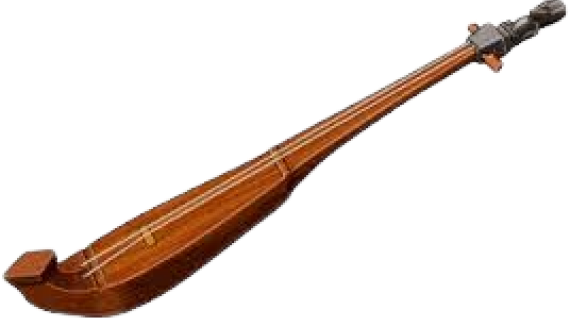

Sulawesi Selatan

Gambar diatas adaah Kacaping, alat musik ini dimainkan dengan cara dipetik. Kacaping ditemukan oleh seorang pelaut karena alat musik ini adalah gabungan dari dayung perahu yang diberi senar. Biasanya, Kacaping digunakan pada tarian daerah dan dongeng-dongeng perjuangan nenek moyang.